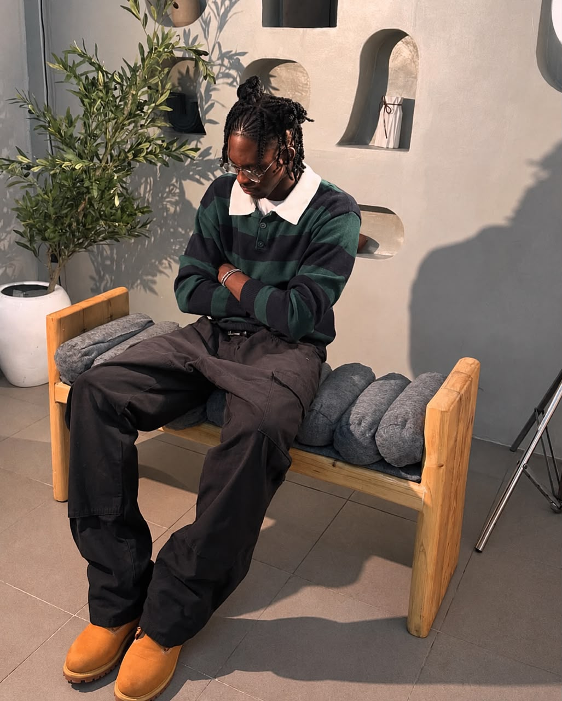

I'm Feranmi, the creative mind behind STYLEDBYGBABY. I’ve always been passionate about fashion, streetwear, and the culture that surrounds it. For me, styling isn’t just about putting outfits together, it’s about creating a personality, a mood, and a presence.
That passion led me to start a personal shopping and clothing service where I selll streetwear and other unique pieces that help people express their individual style.
I work with individuals and artists to bring their vision to life through styling, outfit curation, and personal shopping. Whether it’s a casual fit, a photoshoot, or a performance, I pay attention to the details that make a look feel complete.
STYLEDBYGBABY is where fashion meets personality.
Feranmi